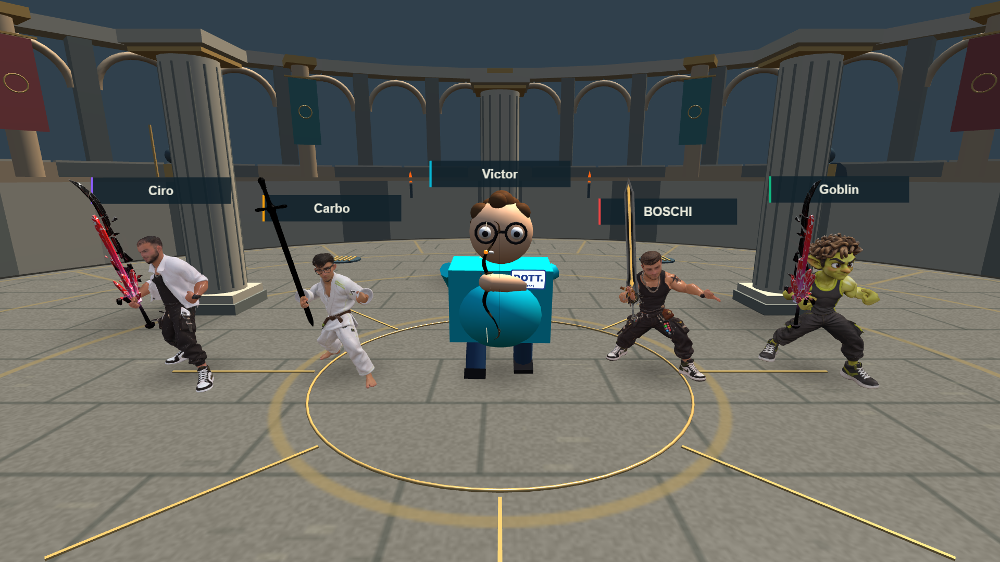
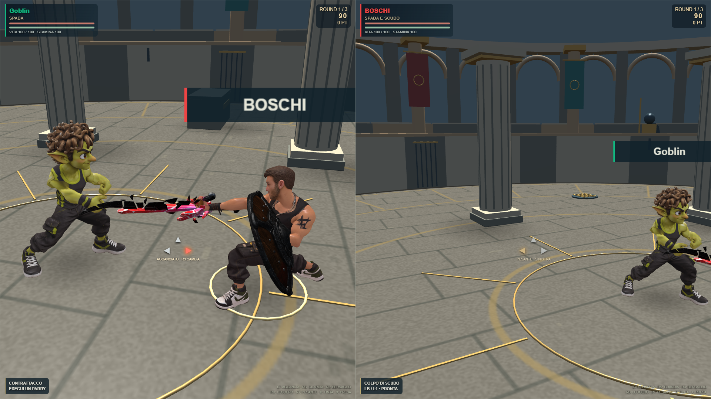
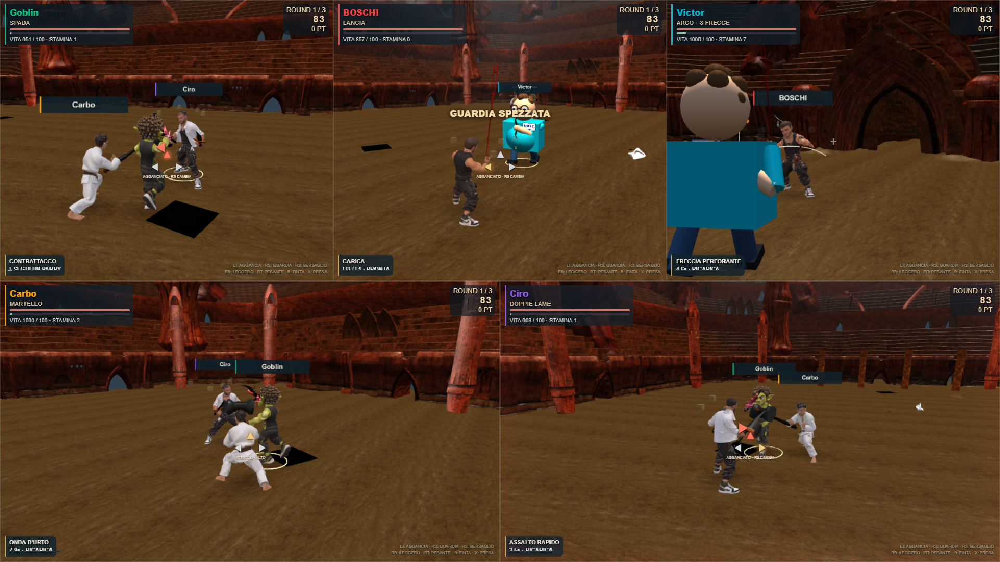

FERRO E FURIA2.0
HONOR & STEEL
Tre arene e sette categorie: aggancio, tre direzioni di guardia, colpi fisici, parry a tempo, finte e prese contrastabili. Quattro spade cosmetiche, due scudi e15 animazioni FBX adattate alle skin originali di Goblin, Buttafuori, Judoka e Ciro. Il Dottore conserva il modello attuale: non è disponibile un suo asset riggato. L’arco ha caricamento, tensione, rilascio sincronizzato e recupero.
Colosseo, Hell e Geonosis nel voto esistente. Tre manche, classifica e spareggi preservati. Bot con percezione ritardata, visuali riservate agli umani e tenacia limitata contro più aggressori.
| Cinque visuali | FPS effettivi | Rendering interno |
|---|
| Hell | 59.8 | 1920×1080 |
| Geonosis | 59.4 | 1600×900 |
RTX3050 · Chrome ANGLE/D3D11 · canvas1920×1080 ·90frame di preparazione e campioni finali di6secondi. Fixture con HP aumentati per mantenere cinque combattenti; nessuna garanzia su altri PC e nessun controller fisico dichiarato verificato.

Le quattro skin originali e il Dottore attuale
Guardia direzionale e duello con le skin originali
Geonosis: cinque visuali attiveTypecheck, build, regole, sessione reale con telefono e pad simulato, verifica degli asset e prove con cinque visuali passati. Collisioni su proxy geometrici da0,4m; non tutte le decorazioni hanno collisione esatta.
Uso locale. Arco CC BY-NC-SA4.0; licenza Scutum Standard e diritti su proprietà intellettuali da verificare prima della pubblicazione. Nessun commit, push o deploy.
Verifiche complete · Fonti e licenze · Apri il gioco